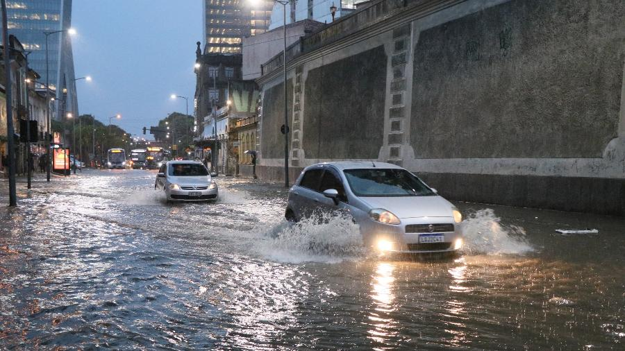

seja bem vindo
Nesta Terça-feira (08), diversas cidades brasileiras foram surpreendidas por uma forte chuva que começou ainda na madrugada e seguiu durante toda a manhã. Em estados como São Paulo, Rio de Janeiro, Minas Gerais e Paraná, vários bairros registraram alagamentos, transbordamento de rios e córregos, além de quedas de energia em algumas regiões. De acordo com a Defesa Civil, os bairros mais atingidos foram aqueles localizados em áreas de encosta e regiões próximas a rios. Em São Paulo, por exemplo, a Marginal Tietê teve pontos totalmente interditados por conta do acúmulo de água, o que causou um trânsito intenso durante o horário de pico. Moradores relatam que a água entrou em casas, comércios e até escolas. Muitos perderam móveis e objetos pessoais. "Eu acordei com a água já na porta da cozinha. Não deu tempo de salvar nada", disse Ana Paula Oliveira, moradora da zona leste de São Paulo. As autoridades reforçam que o período de chuvas intensas ainda não acabou e recomendam que a população evite transitar por áreas alagadas ou tentar atravessar ruas com correntezas fortes. Equipes da Prefeitura e do Corpo de Bombeiros seguem trabalhando para ajudar famílias desalojadas e liberar as vias bloqueadas. Segundo a previsão do tempo, a chuva deve continuar nas próximas 48 horas, especialmente nas regiões Sudeste e Sul do país. A recomendação é acompanhar os alertas emitidos pelos órgãos oficiais e buscar abrigo em locais seguros caso haja risco de deslizamento ou enchente
